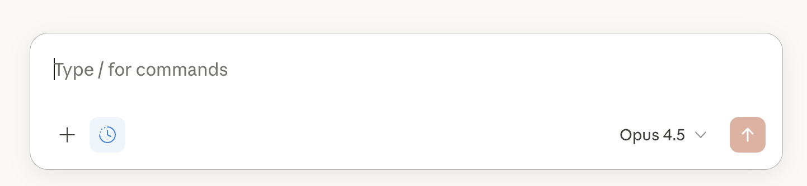
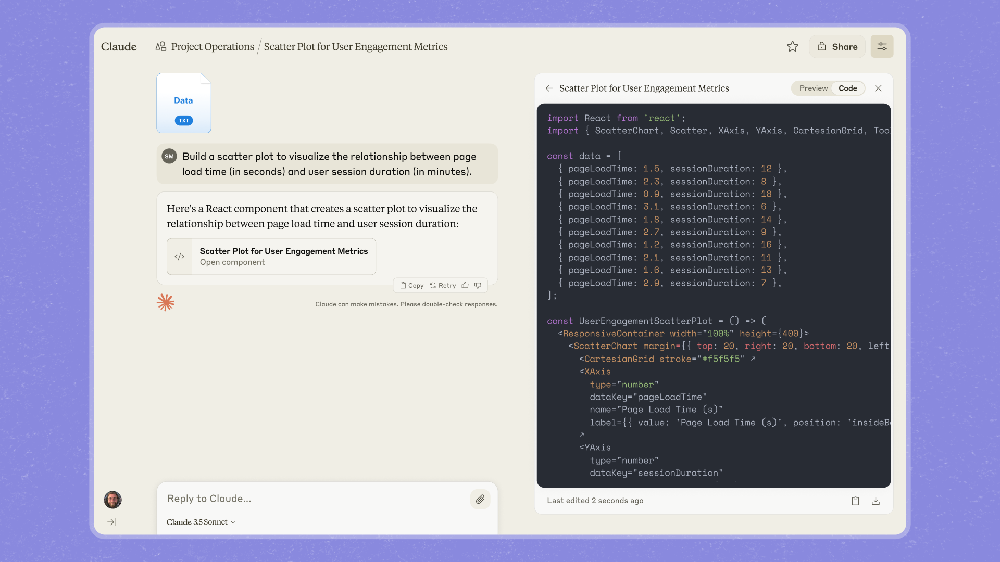
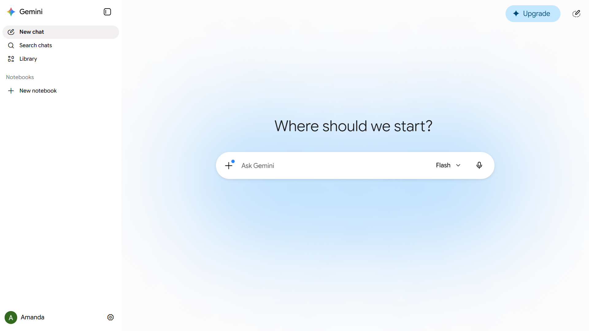

Claude 앱을 기준으로 각 기능이 왜 만들어졌고, 언제 쓰면 좋은지를 익힌 뒤 —
같은 개념이 ChatGPT·Gemini·웍스AI에서는 어떤 이름으로 등장하는지 매핑합니다.
기능 이름은 앱마다 다르지만 개념은 거의 같습니다. 개념을 기억하면 어떤 앱을 만나도 길을 잃지 않습니다.
읽는 법 — 기능마다 4가지를 묻습니다
① 개발 의도: 이 기능은 어떤 불편을 없애려고 만들어졌나 →
② 이럴 때: 내 업무에서 언제 꺼내 쓰나 →
③ 응용 사례: 직무별 실제 예시 →
④ 화면 위치: 그림(모식도)의 1 번호로 표시.
⚠ 그림과 기능 정보에 대해
화면 그림은 위치 설명용 모식도이며, 각 모식도 아래에는 실제 화면 캡처가 들어갈 자리가 있습니다 —
assets/captures/ 폴더에 정해진 파일명으로 캡처(png)를 넣으면 자동으로 표시됩니다
(촬영 목록: assets/captures/README.md, 파일이 없으면 그 자리는 숨겨짐).
AI 앱 UI는 몇 달 단위로 바뀌므로 세미나 직전에 캡처를 갱신하세요(진행자 체크리스트 항목).
기능·플랜 정보는 2026-06 기준입니다.
0. 한눈에 — 기능 매핑 표
이 표 한 장이 이 문서의 요약입니다. 왼쪽(Claude) 열의 개념을 기준으로 가로로 읽으세요.
개념 (Claude 기준)
Claude
ChatGPT
Gemini
웍스AI
대화 + 모델 선택
채팅 · 모델 선택
채팅 · 모델 선택
채팅 · 모델 선택
채팅 · 멀티 LLM 선택(GPT/Claude 등)
내 자료 읽히기
파일 업로드
파일 업로드
파일 업로드 + Drive
문서 업로드 (요약·계약검토 도구)
맥락 저장소
Projects
Projects · Custom GPTs
Gems
사내 챗봇 빌더(RAG)
산출물 작업대
Artifacts
Canvas¹
Canvas
보고서·차트 생성 도구
최신 정보
웹 검색(출처 표기)
웹 검색
Google 검색 통합
모델·도구별 상이
깊은 조사 대행
리서치(Research)
Deep Research
Deep Research
DeepSearch 제휴(금융 특화 추진)
기억
Memory
Memory
개인화·과거 대화 참조
—
일하는 방법 패키지
Skills
Custom GPTs(공유형)
Gems(겸용)
업무 도구 40종(완제품형)
외부 시스템 연결
커넥터(MCP)
커넥터 · GPT Actions
Workspace 연동(Gmail·Docs)
Drive·OneDrive 연동
데이터 분석(코드 실행)
분석 도구
고급 데이터 분석
코드 실행
엑셀/차트 도구
예약·자동 실행
(Claude Code 영역)
Tasks · Agent 모드
Scheduled actions
—
¹ ChatGPT는 2026년 들어 Canvas를 별도 모드 대신 채팅 안 ‘writing/code 블록’으로 흡수하는 중 — 개념은 동일.
1. 기준: Claude 앱 — 기능별 의도와 쓰임
📍 그림 A — 메인 화면 (시작점)
claude.ai
1 ＋ 새 채팅
💬 Chats (대화 목록)
2 📁 Projects
⭐ 즐겨찾기
하단
3 ⚙ 설정 (프로필)
지난주 회의록 요약해줘 (파일 첨부)
요약입니다. 결정사항 3건, 액션아이템 5건…
4＋ 첨부·연결5🔍 검색·리서치메시지를 입력하세요…6모델 ▾
1 새 대화 시작 — 주제가 바뀌면 새 채팅(맥락 섞임 방지)
2 Projects 목록 — 업무별 맥락 저장소 (아래 F3)
3 설정 — Memory·커넥터·기능 켜고 끄기 (그림 C)
4 ＋ 버튼 — 파일 업로드·연결된 앱의 자료 첨부 (F2·F9)
5 검색/리서치 — 웹 검색과 깊은 조사 (F5·F6)
6 모델 선택 — 빠른 답 vs 깊은 사고 (F1)

▲ 실제 화면 캡처 (그림 A 대응) — 촬영 시점 UI 기준
F1. 채팅 + 모델 선택 그림 A-⑥
개발 의도하나의 모델로 모든 일을 시키면 비싸거나 느립니다. 일의 무게에 맞는 두뇌를 고르게 한 것 — 가벼운 질문은 빠른 모델, 전략·분석은 깊은 모델.
이럴 때평소엔 기본값 그대로. 중요한 분석·긴 문서·전략 검토일 때만 상위 모델로 바꿉니다.
응용 사례메일 다듬기·요약 = 기본 모델 / 사업계획 리스크 검토·계약서 분석 = 상위 모델. 자세한 기준은 모델 선택 가이드.
F2. 파일 업로드 & 긴 문서 분석 그림 A-④
개발 의도AI가 일반 지식으로 추측하면 환각이 생깁니다. 내 자료를 직접 읽고 그 근거로만 답하게 만들어 정확도를 끌어올리는 장치입니다. "검색 → 컨텍스트 주입 → 분석" 워크플로우의 핵심.
이럴 때보고서·PDF·엑셀·회의록 등 "이 문서에 대해" 묻고 싶을 때. 항상 일반 질문보다 자료 첨부 질문이 낫습니다.
그림 C — 대화(과정)는 왼쪽, 산출물(결과)은 오른쪽. 산출물만 따로 복사·공유(②)할 수 있습니다.

▲ 실제 화면 캡처 (그림 C 대응)
F4. Artifacts — 산출물 작업대 그림 C
개발 의도채팅창에서는 결과물이 대화에 묻혀 스크롤 속으로 사라집니다. "대화(과정)"와 "산출물(결과)"을 분리해, 결과물을 옆에 두고 깎아 나가는 작업대를 준 것. 버전이 남고, 완성본만 내보낼 수 있습니다.
이럴 때답변이 아니라 "가져갈 결과물"이 필요할 때 — 문서·표·차트·웹페이지·간단한 계산기까지.
응용 사례
경영지원: 사내 공지문 → 그대로 게시
마케팅: 랜딩 카피 A/B 두 버전을 나란히
기획: 견적 간이 계산기(입력하면 계산되는 작은 웹 도구) — 코딩 없이
F5. 웹 검색 그림 A-⑤
개발 의도모델 지식에는 마감 시점(컷오프)이 있습니다. 검색은 그 한계를 메우고, 출처 링크를 달아 "어디서 나온 말인지" 확인 가능하게 만든 환각 대응 장치이기도 합니다.
이럴 때최신 뉴스·가격·경쟁사 동향 등 시점이 중요한 질문. 반대로 내부 자료 분석엔 검색이 필요 없습니다.
응용 사례"이번 분기 ○○ 시장 발표 정리해줘 — 출처 링크 포함" → 출처를 눌러 원문 확인 후 보고서에 인용.
F6. 리서치 (Deep Research) 그림 A-⑤
개발 의도검색 1번으로 안 끝나는 조사가 있습니다. 수십 페이지를 읽고 교차 검증해 보고서로 종합하는 "조사 인턴"을 자동화한 것 — 몇 분~수십 분 걸리는 대신 출처 달린 리포트가 나옵니다.
이럴 때"반나절 걸릴 조사"를 시킬 때. 단순 질문에 쓰면 오히려 느립니다(검색과 구분).
응용 사례신규 시장 진입 전 경쟁 구도 조사, 도입 검토 중인 솔루션 비교 — 결과를 그대로 믿지 말고 핵심 출처 2~3개는 직접 확인.
📍 그림 D — 설정 화면 (기억·연결 관리)
claude.ai / settings
프로필
1 기능 (Capabilities)
2 커넥터 (Connectors)
개인정보·데이터
1Memory — 대화에서 알게 된 내용 기억 켬/끔 · 기억 보기·수정
2연결된 앱 — Google Drive 연결됨 · 사내 도구(MCP) ＋ 추가
그림 D — 그림 A-③ 설정에서 진입. 기억(①)과 외부 연결(②)은 여기서 관리합니다.
▲ 실제 화면 캡처 (그림 D 대응)
F7. Memory — 기억 그림 D-①
개발 의도매번 "저는 마케팅 담당이고…"를 반복하지 않게, 나에 대한 사실을 대화에서 추려 다음 대화로 이어주는 기능. Projects가 "업무별 기억"이라면 Memory는 "나에 대한 기억"입니다.
이럴 때직무·선호 양식·자주 쓰는 표현이 자동 반영되길 원할 때. 무엇이 기억됐는지 설정에서 보고 지울 수 있습니다.
주의회사 계정에서는 기억 기능 사용 여부를 사내 데이터 정책과 함께 결정하세요(민감 정보가 기억에 남지 않게).
F8. Skills — 일하는 방법 패키지 그림 A-④ (＋메뉴)
개발 의도"우리 회사 보고서는 이런 양식·이런 순서로"라는 노하우를 폴더 하나로 패키징해, 필요할 때 AI가 꺼내 쓰게 한 것. 프롬프트를 잘 쓰는 사람의 비법을 팀 자산으로 만드는 기능입니다.
이럴 때팀원 모두가 같은 품질의 산출물을 내야 할 때(보고 양식·브랜드 톤·체크리스트).
응용 사례"주간보고 스킬"을 한 명이 만들어 팀 배포 → 누가 시켜도 같은 양식. Session 4와 워크플로우 가이드에서 실습.
F9. 커넥터 (MCP) — 외부 연결 그림 D-② · 그림 A-④
개발 의도파일을 일일이 업로드하는 대신 AI가 직접 내 Drive·사내 시스템에 손을 뻗게 하는 표준 연결구(MCP). "복사해서 갖다 주는 비서"에서 "직접 찾아 일하는 비서"로 가는 길목입니다.
이럴 때자료가 Google Drive 등 한곳에 모여 있고, 매번 업로드가 번거로울 때.
주의연결 = 그 저장소를 AI가 읽을 수 있게 됨. 연결 범위는 도입 담당·보안팀과 결정(Session 4·보안 비교).
F10. 분석 도구 — 데이터를 코드로 계산 자동 (CSV 첨부 시)
개발 의도언어모델은 암산이 약합니다. 숫자 작업은 추측 대신 실제 코드를 실행해 계산하게 만들어 정확도를 보장하는 기능 — 결과로 차트·통계가 나옵니다.
이럴 때CSV·엑셀의 합계·추이·비교가 필요할 때. "대충 얼마야?"가 아니라 "정확히 계산해줘"라고 시키세요.
응용 사례판매 CSV → 카테고리별 매출 차트 + 전주 대비 증감 (실습: Amazon 주간 리포트 Level 1).
2. ChatGPT — 같은 개념, 이런 이름
위 F1~F10을 익혔다면 ChatGPT는 이름만 바꿔 끼우면 됩니다. 다른 점 위주로 봅니다.
chatgpt.com
＋ 새 채팅
🔍 채팅 검색
1 🧩 GPTs (스토어)
2 📁 Projects
🎬 Sora (영상)
무엇을 도와드릴까요?
＋ 첨부3도구 ▾ (검색·Deep Research·이미지·Canvas)모델 ▾
ChatGPT 모식도 — ① GPT 스토어(남이 만든 도우미 설치) ② Projects(Claude와 거의 동일) ③ 도구 메뉴(검색·리서치·이미지 생성).
▲ 실제 화면 캡처 (ChatGPT)
Claude 개념
ChatGPT에서는
차이 포인트
Projects (F3)
Projects
거의 동일 — 지침+파일+대화 묶음, 프로젝트 전용 메모리.
Skills (F8)
Custom GPTs
지침+지식+도구를 묶어 스토어로 공유/설치 가능한 게 특징. "남이 만든 도우미를 설치한다"는 감각.
Artifacts (F4)
Canvas → 채팅 내 블록
최근엔 별도 모드 대신 채팅 안 writing/code 블록으로 통합되는 중. 개념(결과물을 옆에 두고 다듬기)은 동일.
리서치 (F6)
Deep Research
동일 개념. 플랜별 월 사용 횟수 제한.
Memory (F7)
Memory
동일 개념 — 기억 검색·프로젝트별 메모리 설정.
ChatGPT 고유 강점 — 이건 Claude에 없는/약한 것
이미지 생성 내장 — 시안·일러스트를 대화에서 바로. (Claude는 도표/SVG 중심)
Tasks(예약 실행) — "매주 월 9시에 업계 뉴스 브리핑" 같은 정기 작업 예약.
Advanced Voice — 자연스러운 음성 대화(이동 중 브레인스토밍).
Agent 모드 — 브라우저를 직접 조작해 작업 수행(예약·조사). 아직 검토 필수.
응용: 마케팅이라면 "카피는 Claude Projects, 시안 이미지는 ChatGPT" 같은 병행도 흔합니다.
3. Gemini — Google 일터에 붙어 있는 AI
gemini.google.com
＋ 새 채팅
1 💎 Gems
📓 NotebookLM 연계
안녕하세요!
＋ 파일·Drive2도구 ▾ (Deep Research·Canvas·이미지)모델 ▾
3@Workspace
✉ Gmail에서 찾기
📄 Docs·Sheets에서
구글 문서·메일을 직접 읽고 그 안에서 작동
Gemini 모식도 — ① Gems(=Projects+Skills 겸용) ② 도구 메뉴 ③ Workspace 연동(Gmail·Docs를 소스로).

▲ 실제 화면 캡처 (Gemini)
Claude 개념
Gemini에서는
차이 포인트
Projects+Skills (F3·F8)
Gems
지침+파일을 가진 맞춤 도우미 — Projects와 Skills 역할을 하나로 합친 형태. 미리 만든 Gem(작문 코치 등) 제공.
Artifacts (F4)
Canvas
동일 개념 + 인포그래픽·퀴즈·웹앱 프로토타입 생성에 강점.
리서치 (F6)
Deep Research
웹뿐 아니라 Gmail·Drive·NotebookLM을 조사 소스로 추가 가능한 게 차별점.
커넥터 (F9)
Workspace 연동
별도 연결 설정 없이 Gmail·Docs·Sheets·Meet 안에서 바로 작동(유료 Workspace 플랜).
Gemini 고유 강점
Google Workspace 밀착 — 회사가 Gmail·Docs 기반이라면 "메일함에서 ○○ 찾아 요약"이 그냥 됩니다.
NotebookLM — 자료 수백 건을 노트북에 넣고 그 안에서만 답하게(출처 고정) + 오디오 요약. "자료 기반 학습·온보딩"에 탁월.
영상·이미지 생성(Veo 등) — 콘텐츠 팀의 시안 제작.
판단 기준: 회사 메일·문서가 Google이면 Gemini의 체감 가치가 급상승합니다. 아니라면 장점이 절반으로.
4. 웍스AI — 회사가 검토 중인 한국형 업무 포털
웍스AI(wrks.ai)는 위 세 앱과 철학이 다릅니다. Claude·ChatGPT·Gemini가 "빈 채팅창에서 대화로 만들어가는" 도구라면,
웍스AI는 미리 만들어진 업무 도구 40여 종을 골라 쓰는 포털입니다. 빈 화면이 부담스러운 사용자를 위해 시작점을 메뉴로 제공하는 설계입니다.
wrks.ai (사내 포털)
🏠 홈
1 🧰 업무 도구
2 🤖 사내 챗봇
💬 자유 대화
1업무 도구 고르기 (40여 종)
📝 회의록 정리
📑 계약서 검토
🌐 번역
📊 엑셀 분석
📋 보고서 작성
🖼 이미지
📈 차트
… 더보기
또는 자유롭게 질문…3모델: GPT/Claude ▾
웍스AI 모식도 — ① 업무 도구 그리드(완제품 스킬) ② 사내 자료 기반 챗봇(RAG) ③ 기능별 멀티 LLM 선택.
▲ 실제 화면 캡처 (웍스AI — 도입 검토용 데모/공식 자료 캡처)
Claude 개념
웍스AI에서는
차이 포인트
Skills (F8)
업무 도구 40여 종
회의록·계약검토·번역·보고서 등 — 이미 만들어진 완제품 스킬. 직접 만들 필요 없이 고르기만 하면 됨. 대신 우리 회사 양식으로의 커스텀 폭은 좁음.
Projects (F3)
사내 챗봇 빌더(RAG)
사내 규정·매뉴얼을 올려 전사 공용 챗봇을 만드는 회사판 Projects. 개인 작업실이 아니라 조직 단위.
모델 선택 (F1)
멀티 LLM 라우팅
GPT·Claude·DeepL 등을 기능별로 골라 씀 — 특정 벤더에 안 묶임.
리서치 (F6)
DeepSearch 제휴(추진)
금융 특화 에이전트 출시 추진 중 — 범용 Deep Research는 아직 글로벌 앱이 앞섬.
요금
토큰 종량제
좌석당 정액($20~30/인)이 아닌 쓴 만큼 — 가볍게 쓰는 다수 인원에게 유리한 구조.
웍스AI가 맞는 경우
정형 업무(회의록·번역·요약) 중심의 비개발 직군 다수에게 일괄 보급
한국어 UI·국내 컨설팅·교육이 필요할 때
사용량이 들쭉날쭉해 종량제로 비용 통제하고 싶을 때
사내 규정 챗봇을 빨리 세우고 싶을 때(RAG 빌더)
Claude 앱이 맞는 경우
비정형·깊은 분석 — 전략 검토, 긴 문서 추론, 맞춤 산출물
Projects·Skills로 내 업무에 맞게 깎아 쓰는 헤비 유저
에이전트·자동화로 발전시킬 사람(→ Claude Code, Session 3)
최신 모델을 제약 없이 직접 쓰고 싶을 때
현실적 조합 — 둘은 경쟁이 아니라 역할 분담
가벼운 정형 업무 다수 인원 = 웍스AI 포털, 깊게 쓰는 사람·개발팀 = Claude 직접(앱+Code)이 자연스러운 구도입니다.
도입 검토 시 확인할 보안·계약 조건(데이터가 웍스AI를 거쳐 글로벌 LLM으로 가는 경로의 학습 미사용 보장 등)은
한국 AI 분석(AI3/웍스AI)과 기업용 AI 에이전트 비교를 참고하세요.
5. 정리 — 앱이 아니라 개념을 기억하세요
내 상황
꺼낼 개념
어느 앱이든
같은 설명을 두 번 타이핑하고 있다
맥락 저장소
Projects / Gems / 사내 챗봇
대화가 아니라 "가져갈 결과물"이 필요하다
산출물 작업대
Artifacts / Canvas / 보고서 도구
최신 정보·사실 확인이 필요하다
웹 검색 (+출처 클릭)
전 앱 공통
반나절짜리 조사를 맡기고 싶다
딥 리서치
Research / Deep Research
숫자는 정확해야 한다
코드 실행 분석
분석 도구 / 고급 데이터 분석
팀 전체가 같은 품질을 내야 한다
일하는 방법 패키지
Skills / Custom GPTs / 업무 도구
세미나 진행자에게
이 문서는 Session 2(Claude 앱) 후반 또는 Q&A에서 "ChatGPT/Gemini랑 뭐가 달라요?", "웍스AI 도입하면 이건 왜 배워요?"
질문이 나올 때 화면에 띄우기 좋습니다. 세미나 전에 assets/captures/README.md의 촬영 목록대로
실제 화면 캡처를 떠서 폴더에 넣으면 각 모식도 아래에 자동으로 함께 표시됩니다(UI 변경 대비).
AI Agent 활용 세미나 · 팅크웨어 선행개발부 — 기능·플랜 정보는 2026-06 기준이며 빠르게 바뀝니다. 분기마다 재확인하세요.
참고: 각 서비스 공식 도움말(claude.ai · chatgpt.com · gemini.google.com · wrks.ai) 및 저장소 내 한국 AI 분석, 에이전트 지형도.